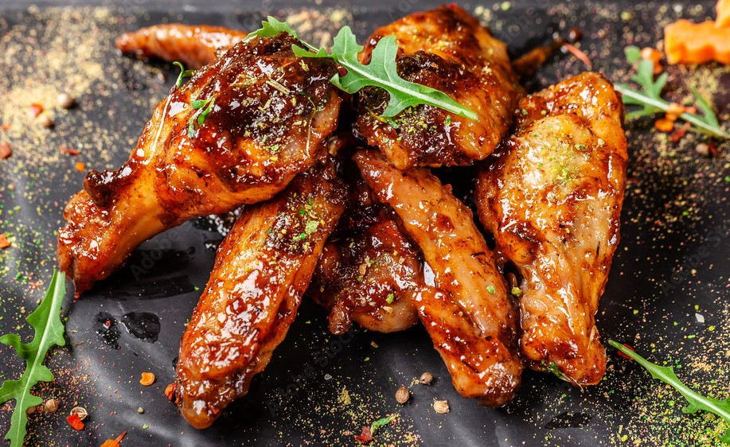
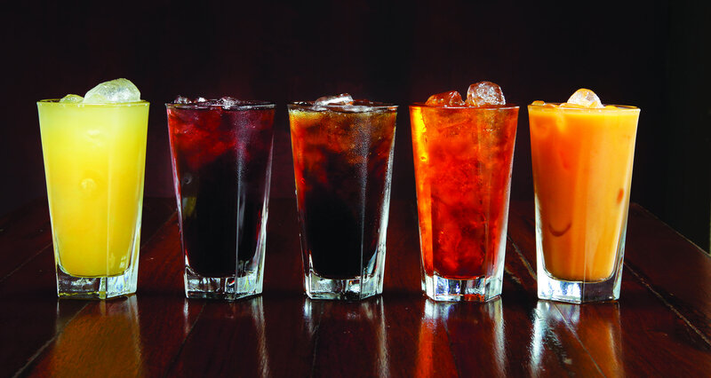

Pizza Menu

Pizza toppings
Our toppings in pizza are meats like bacon, pepperoni, ham, and beef. For vegetables we have olives, pepper, tomato, basil, mushrooms, onion, garlic and spinach. These toppings blended with pizza sauce and mozzarella cheese.
Chicken Menu
Chicken Menu
Our recipes for chicken are garlic fried chiken, buttered chicken, honey-glazed chicken and flavored chicken wings like buffalo wings, parmessan, barbecue, sesami with garlic and sweet spicy adobo.
Other Chicken Menu
Aside from the fried chicken menus we also offer sizzling barbecue chicken, chicken sisig, chicken sisig with tofue, sizzling teriyaki chicken and chicken fillet steak.
Drinks We Offer
Drinks and Beverages
To enjoy fully your meal, these are the drinks you can choose from. We have sodas or carbonated drinks of your favorite brand. For fresh juices we have mango juice, pineapple juice, apple juice, buko, juice, and guyabano juice. If you wants something cool we have fruit shkes for fruits in season. Halo-halo, sao and mais co yelo and banana con yelo is also serve,